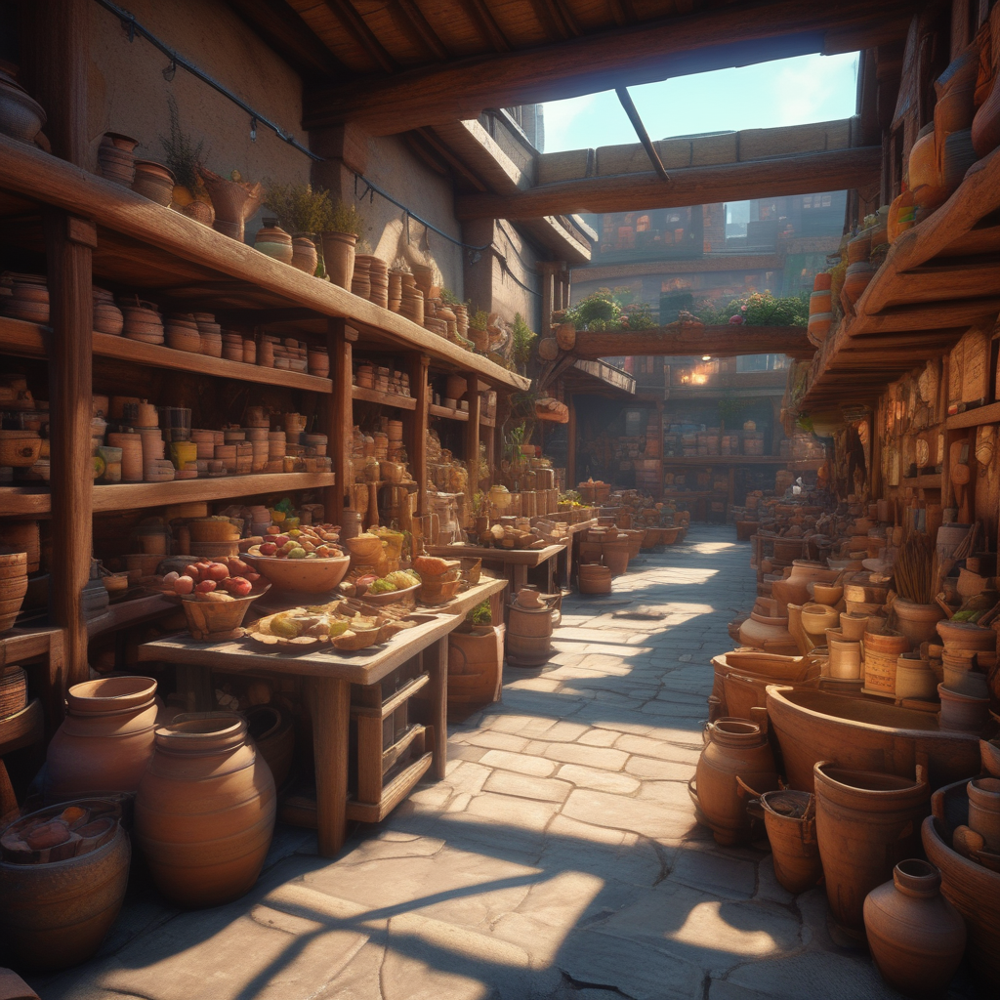

Projects
Drug Seeker Bot
The Drug Seeker Bot is an RPA solution developed using UiPath that automates the search for alternative medications based on user inputs. It scrapes data from multiple sources, organizes it in Excel, and sends personalized email notifications with detailed medication information and dosage reminders using Orchestrator queues.
Rural Artisans Marketing Website
This full-stack project connects rural artisans with global customers, offering a platform to showcase and sell unique handmade products. Developed using PHP and SQL, the website includes features like artist profiles, custom order requests, and secure payment gateways, promoting cultural exchange and empowering local craftsmen.
View on GitHubSkincare Product Recommender
This machine learning project uses models like Naive Bayes, Logistic Regression, and SGD Classifier to recommend skincare products based on user-specific needs such as skin type, tone, and other preferences. The system processes product descriptions, reviews, and ingredient lists to provide highly personalized suggestions.
View on GitHubOnline Job Portal

This project involved developing a comprehensive job portal using HTML, CSS, JavaScript, and PHP. The platform allows users to search and apply for jobs, while employers can post job listings and manage applications. The portal features secure login systems, user profile management, and efficient job matching algorithms.
View on GitHub